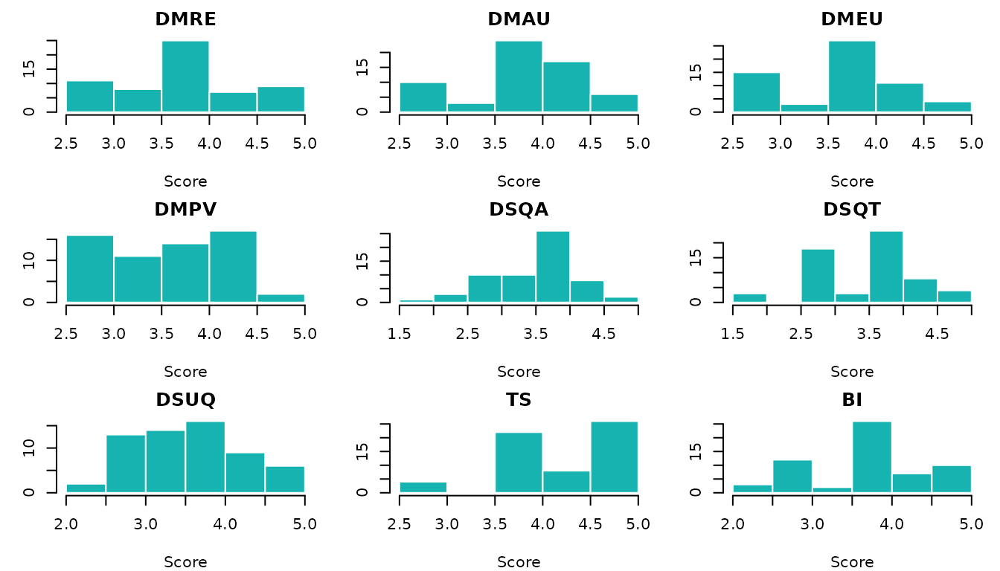
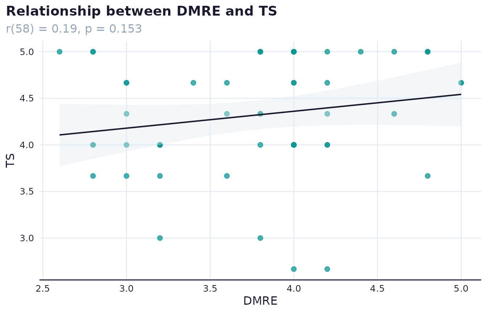

Survey design and live results: a tourism services example
Source:vignettes/surveyframe.Rmd
surveyframe.RmdAbout this vignette
This vignette follows a single instrument through the complete
surveyframe workflow: design the questionnaire, export it as a hosted
survey with a Google Sheets backend, collect responses, clean and score
them, run the analysis plan, and render a results report. The results
section uses 60 simulated responses so the vignette builds offline.
Replacing the simulated data with a call to
read_sheet_responses() connects the same workflow to live
responses that grow with each submission.
The questionnaire and concept are adopted from:
Sharafuddin, M. A., Madhavan, M., & Wangtueai, S. (2024). Assessing the Effectiveness of Digital Marketing in Enhancing Tourist Experiences and Satisfaction: A Study of Thailand’s Tourism Services. Administrative Sciences, 14(11), 273. https://doi.org/10.3390/admsci14110273
The instrument covers five research areas applicable to any tourism services context: digital marketing effectiveness (relevance, accessibility, ease of use, and perceived value), destination service quality (accommodation and local transport), destination sustainability quality, tourist satisfaction, and behavioural intention. The item wording is reproduced from the original questionnaire. Researchers studying other destinations can adapt the scales and analysis plan to their own context.
The questionnaire
Shared Likert scale
All rated items use a five-point agreement scale.
likert5 <- sf_choices(
"likert5",
values = 1:5,
labels = c("Strongly disagree", "Disagree",
"Neither agree nor disagree", "Agree", "Strongly agree")
)Helper functions
stem_items() builds items that share a common sentence
stem. Each item is the stem followed by a unique completion.
solo_items() builds standalone items. Neither function is
exported, and both use only sf_item().
stem_items <- function(ids, stem, completions, scale_id) {
Map(
function(id, comp)
sf_item(id, paste(stem, comp),
type = "likert", required = TRUE,
choice_set = "likert5", scale_id = scale_id),
ids, completions
)
}
solo_items <- function(ids, labels, scale_id) {
Map(
function(id, lab)
sf_item(id, lab,
type = "likert", required = TRUE,
choice_set = "likert5", scale_id = scale_id),
ids, labels
)
}Digital marketing items
Relevance and engagement (DMRE, 5 items)
dmre_stem <- paste(
"The digital marketing contents I encountered during my",
"trip planning and booking phases were"
)
dmre_completions <- c(
"relevant to my interests.",
"engaging.",
"customisable.",
"flexible and I was able to make real-time adjustments for my demand.",
"able to cater to my specific needs and preferences."
)
dmre_items <- stem_items(
paste0("dmre_", 1:5), dmre_stem, dmre_completions, "DMRE"
)Accessibility and usefulness (DMAU, 5 items)
dmau_stem <- "The contents, communication, and booking services were"
dmau_completions <- c(
"easy to find so I could contact service providers and book my trip directly.",
"fast.",
"efficient.",
"of good quality.",
"user friendly."
)
dmau_items <- stem_items(
paste0("dmau_", 1:5), dmau_stem, dmau_completions, "DMAU"
)Ease of use (DMEU, 5 items)
dmeu_stem <- paste(
"The digital marketing contents and procedures regarding",
"trip planning and booking were"
)
dmeu_completions <- c(
"easy to learn.",
"understandable and required little mental effort.",
"neat and simple.",
"easy to follow.",
"mobile friendly."
)
dmeu_items <- stem_items(
paste0("dmeu_", 1:5), dmeu_stem, dmeu_completions, "DMEU"
)Perceived value (DMPV, 5 items)
dmpv_stem <- paste(
"In terms of value, both the commercial and",
"user-generated contents are"
)
dmpv_completions <- c(
"sufficient to support eco-friendly practices.",
"appropriate.",
"trustworthy and credible.",
"consistent across all digital platforms.",
"value for money."
)
dmpv_items <- stem_items(
paste0("dmpv_", 1:5), dmpv_stem, dmpv_completions, "DMPV"
)Destination service quality items
Accommodation (DSQA, 4 items)
dsqa_stem <- "The accommodation related services met my expectations for"
dsqa_completions <- c(
"check-in and check-out services.",
"room cleanliness.",
"staff attitude.",
"safety and security."
)
dsqa_items <- stem_items(
paste0("dsqa_", 1:4), dsqa_stem, dsqa_completions, "DSQA"
)Local transport (DSQT, 5 items)
Destination sustainability quality (DSUQ, 11 items)
dsuq_labels <- c(
"I can easily find and purchase locally-made handicrafts and souvenir products.",
"The livelihoods of local vendors and artisans are respected, and fair prices are paid for their products.",
"The size of food portions sold is adequate, reducing waste and leftovers.",
"Awareness programmes are adequate in encouraging me to reduce water consumption.",
"There are enough local guides with in-depth knowledge to enhance my travel experience.",
"Sustainable transport options such as bikes, walking routes, and public transport are adequate.",
"Reusable bags are adequately available for purchase.",
"Digital infrastructure is adequate so that I can avoid printing and use digital copies.",
"There are adequate choices of sustainable seafood in the destination.",
"There are enough litter bins throughout the destination.",
"There are adequate awareness signs about endangered marine species, plants, and animals."
)
dsuq_items <- solo_items(paste0("dsuq_", 1:11), dsuq_labels, "DSUQ")Tourist satisfaction (TS, 3 items) and behavioural intention (BI, 3 items)
ts_items <- solo_items(
paste0("ts_", 1:3),
c(
"The destination met or exceeded my expectations.",
"Overall, my travel experience with the destination was good.",
"Overall, I felt comfortable in the destination."
),
"TS"
)
bi_items <- solo_items(
paste0("bi_", 1:3),
c(
"I will recommend others to use online platforms for planning and booking their trips.",
"I will share my experience online.",
"I intend to revisit the destination."
),
"BI"
)Demographic items
gender_cs <- sf_choices("gender",
c("male", "female", "transgender"), c("Male", "Female", "Transgender"))
age_cs <- sf_choices("age",
c("18_25", "26_40", "41_50", "51_60", "60_plus"),
c("18-25", "26-40", "41-50", "51-60", "60 and above"))
visitor_cs <- sf_choices("visitor",
c("first_time", "repeat"),
c("First-time visitor", "Repeated visitor"))
freq_cs <- sf_choices("freq_visit",
c("lt_1", "once", "2_3", "gt_3"),
c("Less than 1 time in a year", "Once in a year",
"2-3 times in a year", "More than 3 times in a year"))
nationality_cs <- sf_choices("nationality",
c("thai", "chinese", "japanese", "korean", "indian", "australian",
"british", "german", "american", "other"),
c("Thai", "Chinese", "Japanese", "Korean", "Indian", "Australian",
"British", "German", "American", "Other"))
education_cs <- sf_choices("education",
c("high_school", "diploma", "undergraduate", "post_graduate"),
c("High school", "Diploma", "Undergraduate", "Post graduate"))
profession_cs <- sf_choices("profession",
c("student", "business", "salaried", "freelancer", "not_working"),
c("Student", "Business", "Salaried and working", "Freelancer",
"Not working (housewife or retired)"))
companion_cs <- sf_choices("companion",
c("friends", "family", "other"),
c("Friends", "Family members", "Other"))
group_cs <- sf_choices("group_size",
c("lt_3", "3_5", "gt_5"),
c("Less than 3", "3-5", "More than 5"))
demo_items <- list(
sf_item("gender", "Gender", type = "single_choice",
required = TRUE, choice_set = "gender"),
sf_item("age_band", "Age", type = "single_choice",
required = TRUE, choice_set = "age"),
sf_item("visitor_type", "I am", type = "single_choice",
required = TRUE, choice_set = "visitor"),
sf_item("freq_visit", "Frequency of visit", type = "single_choice",
required = TRUE, choice_set = "freq_visit"),
sf_item("nationality", "Nationality", type = "single_choice",
required = TRUE, choice_set = "nationality"),
sf_item("education", "Education level", type = "single_choice",
required = TRUE, choice_set = "education"),
sf_item("profession", "Profession", type = "single_choice",
required = TRUE, choice_set = "profession"),
sf_item("companion", "I visit with my", type = "single_choice",
required = TRUE, choice_set = "companion"),
sf_item("group_size", "My travel group size is", type = "single_choice",
required = TRUE, choice_set = "group_size")
)Scales
make_scale <- function(id, label, ids) {
sf_scale(id, label, items = ids, method = "mean")
}
scales <- list(
make_scale("DMRE", "Digital marketing: relevance and engagement", paste0("dmre_", 1:5)),
make_scale("DMAU", "Digital marketing: accessibility and usefulness", paste0("dmau_", 1:5)),
make_scale("DMEU", "Digital marketing: ease of use", paste0("dmeu_", 1:5)),
make_scale("DMPV", "Digital marketing: perceived value", paste0("dmpv_", 1:5)),
make_scale("DSQA", "Destination service quality: accommodation", paste0("dsqa_", 1:4)),
make_scale("DSQT", "Destination service quality: transport", paste0("dsqt_", 1:5)),
make_scale("DSUQ", "Destination sustainability quality", paste0("dsuq_", 1:11)),
make_scale("TS", "Tourist satisfaction", paste0("ts_", 1:3)),
make_scale("BI", "Behavioural intention", paste0("bi_", 1:3))
)Assemble the instrument
choice_sets <- list(
likert5, gender_cs, age_cs, visitor_cs, freq_cs, nationality_cs,
education_cs, profession_cs, companion_cs, group_cs
)
rated_items <- c(dmre_items, dmau_items, dmeu_items, dmpv_items,
dsqa_items, dsqt_items, dsuq_items, ts_items, bi_items)
study <- sf_instrument(
title = "Digital Marketing Effectiveness of Tourism Services",
version = "1.0.0",
description = paste(
"Questionnaire covering digital marketing effectiveness,",
"destination service quality, sustainability quality,",
"tourist satisfaction, and behavioural intention.",
"Adopted from Sharafuddin, Madhavan & Wangtueai (2024),",
"Administrative Sciences, 14(11), 273.",
"https://doi.org/10.3390/admsci14110273"
),
authors = "Mohammed Ali Sharafuddin",
languages = "en",
components = c(choice_sets, rated_items, demo_items, scales)
)
study
#> <sframe>
#> Title: Digital Marketing Effectiveness of Tourism Services
#> Version: 1.0.0
#> Items: 55
#> Scales: 9
#> Status: not validatedValidate and serialise
validate_sframe() checks every item ID, choice set
reference, and scale membership before any data is collected.
write_sframe() saves the validated instrument with a
SHA-256 hash so any post-collection edits are detectable.
v <- validate_sframe(study, strict = FALSE)
v$valid
#> [1] TRUE
length(v$problems)
#> [1] 0
# Save the instrument. Keep this file alongside your analysis script.
sframe_path <- write_sframe(study, file.path(tempdir(), "tourism_services_v1.sframe"),
overwrite = TRUE)
# Reload the instrument from disk at any time with:
study2 <- read_sframe(sframe_path)
identical(study$meta$title, study2$meta$title)
#> [1] TRUESet up data collection
Store the Google Sheets endpoint in the instrument
When an endpoint URL is set on the instrument,
export_static_survey() reads it automatically. Set the URL
once, export as many times as needed without repeating the argument.
# Replace with your deployed Apps Script URL after the setup steps below.
study$render$google_sheets_endpoint <-
"https://script.google.com/macros/s/YOUR_SCRIPT_ID/exec"Export the static HTML survey
export_static_survey() produces a single self-contained
HTML file. Respondents open it in any browser, fill it in, and their
submission is downloaded as a CSV and, if an endpoint is configured,
posted to the Google Sheet at the same time. The file can be hosted on
GitHub Pages, shared by email, or opened directly from disk.
html_path <- export_static_survey(
study,
output_path = file.path(tempdir(), "tourism_services_survey.html"),
open = FALSE
)
#> Static survey written to '/tmp/RtmpJJ679d/tourism_services_survey.html' (65.3
#> KB).
file.exists(html_path)
#> [1] TRUEWhat the respondent sees
The exported survey carries its own design, independent of the SurveyBuilder or SurveyStudio chrome used to build it. Question text sits in a serif typeface, options render as bordered cards with a selection tick, Likert items render as numbered squares, and a slim progress bar tracks completion. Every one of those colours derives from the instrument’s single theme colour, so the line below re-skins the whole survey without touching anything else.
study$render$theme <- "#0f766e"Two things about the export matter for planning a real deployment.
- It is designed for a phone first. Option cards and touch targets meet a 44 pixel minimum, and a matrix question (see the input-types demo in the SurveyBuilder vignette) reflows from a table into stacked, labelled cards below 600 pixels of width, so no question ever needs horizontal scrolling to complete on a small screen.
- It meets WCAG 2.2 AA. Every control carries an accessible name, keyboard focus is visible on option cards, a validation error is announced to assistive technology, and required questions are marked by more than colour alone.
Generate the Google Sheets collector script
export_google_sheet() writes a Google Apps Script file.
Deploy it in a Google Sheet and it creates a response tab with the
correct column headers. Matrix, multiple-choice, and ranking questions
each need more than one column, so the collector expands them
automatically: a matrix gets one column per row, a multiple-choice
question gets one 0/1 column per option, and a ranking question gets one
column per option holding its rank. A five-option multiple-choice item
named channels, for example, becomes five columns,
channels__option1 through channels__option5,
each holding 0 or 1, ready for analysis with
no string-splitting step.
script_path <- export_google_sheet(
study,
sheet_url = "https://docs.google.com/spreadsheets/d/YOUR_SHEET_ID",
output_dir = tempdir()
)
#> Apps Script written to: /tmp/RtmpJJ679d/surveyframe_collector.gs
#> Follow the setup instructions inside the file to deploy it.
file.exists(script_path)
#> [1] TRUETo deploy the script:
- Open or create a Google Sheet.
- Click Extensions, then Apps Script.
- Paste the contents of the generated
.gsfile, replacing any existing code. - Click Deploy, then New deployment. Set type to Web app.
- Set “Who has access” to Anyone.
- Copy the Web App URL.
- Paste the URL into
study$render$google_sheets_endpointabove and re-export the survey.
Pull live responses
Once the survey is live, read the growing response set with one call. Re-run this line and everything below it to refresh all results.
responses <- read_sheet_responses(
sheet_id = "YOUR_SHEET_ID",
instrument = study
)Simulated responses for offline demonstration
The code block below generates 60 plausible responses so the
remainder of this vignette runs without a network connection. Replace
responses with the output of
read_sheet_responses() and re-run from the quality section
onward to use real data.
set.seed(2024)
n <- 60
# Each construct is driven by a latent score plus item-level noise.
# Correlations between constructs are introduced by sharing variance.
lat <- function(mu, sigma) pmax(1, pmin(5, round(rnorm(n, mu, sigma))))
add_noise <- function(x, sigma = 0.45) {
pmax(1L, pmin(5L, as.integer(round(x + rnorm(n, 0, sigma)))))
}
# Higher service quality and sustainability lift satisfaction.
lat_dsqa <- lat(3.7, 0.6)
lat_dsqt <- lat(3.6, 0.6)
lat_dsuq <- lat(3.5, 0.6)
lat_ts <- pmax(1, pmin(5, round(
0.4 * lat_dsqa + 0.3 * lat_dsqt + 0.2 * lat_dsuq + rnorm(n, 0.6, 0.3)
)))
lat_bi <- pmax(1, pmin(5, round(0.7 * lat_ts + rnorm(n, 0.5, 0.4))))
# Digital marketing constructs are loosely correlated with each other.
lat_dmre <- lat(3.8, 0.6)
lat_dmau <- pmax(1, pmin(5, round(0.5 * lat_dmre + rnorm(n, 1.9, 0.4))))
lat_dmeu <- pmax(1, pmin(5, round(0.4 * lat_dmre + rnorm(n, 2.2, 0.4))))
lat_dmpv <- pmax(1, pmin(5, round(0.3 * lat_dmre + rnorm(n, 2.5, 0.4))))
# Repeat visitors score slightly higher on satisfaction and intention.
visitor_type <- sample(c("first_time", "repeat"), n,
replace = TRUE, prob = c(0.45, 0.55))
lat_ts[visitor_type == "repeat"] <- pmin(5L, lat_ts[visitor_type == "repeat"] + 1L)
lat_bi[visitor_type == "repeat"] <- pmin(5L, lat_bi[visitor_type == "repeat"] + 1L)
# Build item columns from latent scores.
make_cols <- function(lat, k, prefix) {
setNames(
as.data.frame(
vapply(seq_len(k), function(i) add_noise(lat), integer(n))
),
paste0(prefix, seq_len(k))
)
}
sim_df <- cbind(
data.frame(
respondent_id = sprintf("R%03d", seq_len(n)),
submitted_at = format(
seq(as.POSIXct("2025-01-10 09:00", tz = "UTC"),
by = "1 hour", length.out = n),
"%Y-%m-%dT%H:%M:%SZ"
),
started_at = format(
seq(as.POSIXct("2025-01-10 08:50", tz = "UTC"),
by = "1 hour", length.out = n),
"%Y-%m-%dT%H:%M:%SZ"
),
gender = sample(c("male", "female", "transgender"),
n, TRUE, c(0.44, 0.55, 0.01)),
age_band = sample(c("18_25", "26_40", "41_50", "51_60", "60_plus"),
n, TRUE, c(0.15, 0.40, 0.25, 0.15, 0.05)),
visitor_type = visitor_type,
freq_visit = sample(c("lt_1", "once", "2_3", "gt_3"),
n, TRUE, c(0.15, 0.25, 0.35, 0.25)),
nationality = sample(
c("thai", "chinese", "japanese", "korean", "indian",
"australian", "british", "german", "american", "other"),
n, TRUE),
education = sample(c("high_school", "diploma", "undergraduate", "post_graduate"),
n, TRUE, c(0.05, 0.10, 0.48, 0.37)),
profession = sample(c("student", "business", "salaried", "freelancer", "not_working"),
n, TRUE, c(0.15, 0.20, 0.45, 0.12, 0.08)),
companion = sample(c("friends", "family", "other"),
n, TRUE, c(0.35, 0.55, 0.10)),
group_size = sample(c("lt_3", "3_5", "gt_5"),
n, TRUE, c(0.30, 0.50, 0.20)),
stringsAsFactors = FALSE
),
make_cols(lat_dmre, 5, "dmre_"),
make_cols(lat_dmau, 5, "dmau_"),
make_cols(lat_dmeu, 5, "dmeu_"),
make_cols(lat_dmpv, 5, "dmpv_"),
make_cols(lat_dsqa, 4, "dsqa_"),
make_cols(lat_dsqt, 5, "dsqt_"),
make_cols(lat_dsuq, 11, "dsuq_"),
make_cols(lat_ts, 3, "ts_"),
make_cols(lat_bi, 3, "bi_")
)
# Align the data frame to the instrument.
responses <- read_responses(sim_df, study,
respondent_id = "respondent_id",
submitted_at = "submitted_at",
meta_cols = "started_at",
strict = FALSE)
cat("Respondents:", nrow(responses), "\n")
#> Respondents: 60
cat("Columns: ", ncol(responses), "\n")
#> Columns: 58Quality checks
qr <- quality_report(responses, study, respondent_id = "respondent_id")
quality_summary <- data.frame(
Metric = c("Respondents", "Items", "Flagged for review", "Flag rate"),
Value = c(qr$summary$n_respondents, qr$summary$n_items, qr$summary$n_flagged,
sprintf("%.1f%%", 100 * qr$summary$flag_rate)),
stringsAsFactors = FALSE
)
kable(quality_summary, align = c("l", "r"), caption = "Quality screening summary")| Metric | Value |
|---|---|
| Respondents | 60 |
| Items | 55 |
| Flagged for review | 59 |
| Flag rate | 98.3% |
The flagged count reflects straight-lining detection on simulated data, where random responses often repeat values. With real survey responses the flagging rate is typically much lower. The flag marks respondents for researcher review, not automatic exclusion.
mr <- missing_data_report(responses, study)
# mr holds $item_missing, $respondent_missing, $patterns, $mcar, and $apa.
kable(mr$item_missing, digits = 2,
col.names = c("Variable", "Missing (n)", "Missing (%)", "Valid (n)"),
caption = "Item-level missingness")| Variable | Missing (n) | Missing (%) | Valid (n) | |
|---|---|---|---|---|
| dmre_1 | dmre_1 | 0 | 0 | 60 |
| dmre_2 | dmre_2 | 0 | 0 | 60 |
| dmre_3 | dmre_3 | 0 | 0 | 60 |
| dmre_4 | dmre_4 | 0 | 0 | 60 |
| dmre_5 | dmre_5 | 0 | 0 | 60 |
| dmau_1 | dmau_1 | 0 | 0 | 60 |
| dmau_2 | dmau_2 | 0 | 0 | 60 |
| dmau_3 | dmau_3 | 0 | 0 | 60 |
| dmau_4 | dmau_4 | 0 | 0 | 60 |
| dmau_5 | dmau_5 | 0 | 0 | 60 |
| dmeu_1 | dmeu_1 | 0 | 0 | 60 |
| dmeu_2 | dmeu_2 | 0 | 0 | 60 |
| dmeu_3 | dmeu_3 | 0 | 0 | 60 |
| dmeu_4 | dmeu_4 | 0 | 0 | 60 |
| dmeu_5 | dmeu_5 | 0 | 0 | 60 |
| dmpv_1 | dmpv_1 | 0 | 0 | 60 |
| dmpv_2 | dmpv_2 | 0 | 0 | 60 |
| dmpv_3 | dmpv_3 | 0 | 0 | 60 |
| dmpv_4 | dmpv_4 | 0 | 0 | 60 |
| dmpv_5 | dmpv_5 | 0 | 0 | 60 |
| dsqa_1 | dsqa_1 | 0 | 0 | 60 |
| dsqa_2 | dsqa_2 | 0 | 0 | 60 |
| dsqa_3 | dsqa_3 | 0 | 0 | 60 |
| dsqa_4 | dsqa_4 | 0 | 0 | 60 |
| dsqt_1 | dsqt_1 | 0 | 0 | 60 |
| dsqt_2 | dsqt_2 | 0 | 0 | 60 |
| dsqt_3 | dsqt_3 | 0 | 0 | 60 |
| dsqt_4 | dsqt_4 | 0 | 0 | 60 |
| dsqt_5 | dsqt_5 | 0 | 0 | 60 |
| dsuq_1 | dsuq_1 | 0 | 0 | 60 |
| dsuq_2 | dsuq_2 | 0 | 0 | 60 |
| dsuq_3 | dsuq_3 | 0 | 0 | 60 |
| dsuq_4 | dsuq_4 | 0 | 0 | 60 |
| dsuq_5 | dsuq_5 | 0 | 0 | 60 |
| dsuq_6 | dsuq_6 | 0 | 0 | 60 |
| dsuq_7 | dsuq_7 | 0 | 0 | 60 |
| dsuq_8 | dsuq_8 | 0 | 0 | 60 |
| dsuq_9 | dsuq_9 | 0 | 0 | 60 |
| dsuq_10 | dsuq_10 | 0 | 0 | 60 |
| dsuq_11 | dsuq_11 | 0 | 0 | 60 |
| ts_1 | ts_1 | 0 | 0 | 60 |
| ts_2 | ts_2 | 0 | 0 | 60 |
| ts_3 | ts_3 | 0 | 0 | 60 |
| bi_1 | bi_1 | 0 | 0 | 60 |
| bi_2 | bi_2 | 0 | 0 | 60 |
| bi_3 | bi_3 | 0 | 0 | 60 |
| gender | gender | 0 | 0 | 60 |
| age_band | age_band | 0 | 0 | 60 |
| visitor_type | visitor_type | 0 | 0 | 60 |
| freq_visit | freq_visit | 0 | 0 | 60 |
| nationality | nationality | 0 | 0 | 60 |
| education | education | 0 | 0 | 60 |
| profession | profession | 0 | 0 | 60 |
| companion | companion | 0 | 0 | 60 |
| group_size | group_size | 0 | 0 | 60 |
# $apa provides a plain-language summary suitable for a methods section.
cat(mr$apa, "\n")
#> Missing-data diagnostics were computed for 55 variable(s).Score and describe
score_scales() appends one column per scale to the data
frame, using the scoring rules stored in the instrument. If a column
with the same name as a scale already exists in the data frame,
score_scales() skips that scale so pre-scored data is never
overwritten.
scored <- score_scales(responses, study)
scale_cols <- c("DMRE", "DMAU", "DMEU", "DMPV",
"DSQA", "DSQT", "DSUQ", "TS", "BI")
# Display scale means and standard deviations as a table
scale_summary <- data.frame(
Scale = scale_cols,
Mean = round(colMeans(scored[, scale_cols], na.rm = TRUE), 2),
SD = round(apply(scored[, scale_cols], 2, sd, na.rm = TRUE), 2),
row.names = NULL
)
kable(scale_summary, digits = 2, caption = "Scale score summary")| Scale | Mean | SD |
|---|---|---|
| DMRE | 3.79 | 0.63 |
| DMAU | 3.84 | 0.57 |
| DMEU | 3.76 | 0.58 |
| DMPV | 3.62 | 0.58 |
| DSQA | 3.63 | 0.63 |
| DSQT | 3.52 | 0.74 |
| DSUQ | 3.59 | 0.68 |
| TS | 4.32 | 0.61 |
| BI | 3.79 | 0.71 |
op <- par(mfrow = c(3, 3), mar = c(4, 3, 2, 1))
for (s in scale_cols) {
v <- scored[[s]]; v <- v[is.finite(v)]
hist(v, col = "#16B3B1", border = "white", main = s, xlab = "Score", ylab = "")
}
par(op)Reliability
if (requireNamespace("psych", quietly = TRUE)) {
rr <- reliability_report(scored, study, omega = FALSE)
rel_df <- do.call(rbind, lapply(rr, function(s) data.frame(
Scale = paste0(s$label, " (", s$scale_id, ")"),
Items = s$n_items,
N = s$n,
Alpha = if (!is.null(s$alpha)) sprintf("%.2f", s$alpha) else "n/a",
stringsAsFactors = FALSE)))
kable(rel_df, row.names = FALSE, align = c("l", "c", "c", "r"),
caption = "Scale reliability")
}| Scale | Items | N | Alpha |
|---|---|---|---|
| Digital marketing: relevance and engagement (DMRE) | 5 | 60 | 0.87 |
| Digital marketing: accessibility and usefulness (DMAU) | 5 | 60 | 0.86 |
| Digital marketing: ease of use (DMEU) | 5 | 60 | 0.87 |
| Digital marketing: perceived value (DMPV) | 5 | 60 | 0.85 |
| Destination service quality: accommodation (DSQA) | 4 | 60 | 0.86 |
| Destination service quality: transport (DSQT) | 5 | 60 | 0.90 |
| Destination sustainability quality (DSUQ) | 11 | 60 | 0.95 |
| Tourist satisfaction (TS) | 3 | 60 | 0.86 |
| Behavioural intention (BI) | 3 | 60 | 0.82 |
A Cronbach’s alpha of 0.70 or above is conventionally accepted as
adequate internal consistency (Nunnally, 1978). For scales with three or
more items, McDonald’s omega is a more accurate estimate because it
accounts for unequal factor loadings across items. Alpha assumes all
items load equally on the factor. Pass omega = TRUE when
items within a scale differ substantially in their contribution. See
?reliability_report for details.
EFA readiness
Before a confirmatory factor analysis, it is good practice to confirm
that the item correlations are strong enough to support factoring.
efa_report() runs the KMO measure of sampling adequacy and
Bartlett’s test of sphericity, and uses parallel analysis to suggest the
number of factors.
if (requireNamespace("psych", quietly = TRUE)) {
er <- efa_report(scored, study)
print(er)
}A KMO value of 0.60 or above and a significant Bartlett test confirm that the correlation structure supports factor analysis. The suggested factor count from parallel analysis is a guide. Theory should take precedence.
Construct validity
validity_report() computes composite reliability (CR)
and average variance extracted (AVE) from supplied factor loadings.
Discriminant validity is assessed via the Fornell-Larcker criterion and
HTMT when construct scores are supplied.
# Supply a named list of loadings (construct -> item loadings vector)
loadings_list <- list(
DMRE = c(dm_1 = 0.78, dm_2 = 0.82, dm_3 = 0.75),
TS = c(ts_1 = 0.84, ts_2 = 0.80)
)
vr <- validity_report(loadings_list)
print(vr$reliability)AVE above 0.50 and CR above 0.70 are the conventional thresholds for convergent validity. The Fornell-Larcker criterion requires that the square root of each construct’s AVE exceeds its highest correlation with any other construct.
Analysis plan
The plan binds each research question to a statistical technique and
the variable roles it needs. run_analysis_plan() executes
every block and returns one result per question.
study$analysis_plan <- list(
list(
id = "RQ1",
research_question = "Are digital marketing perceptions associated with tourist satisfaction?",
family = "association",
method = "correlation_pearson",
roles = list(x = "DMRE", y = "TS"),
options = list(alpha = 0.05)
),
list(
id = "RQ2",
research_question = "Is service quality associated with tourist satisfaction?",
family = "association",
method = "correlation_pearson",
roles = list(x = "DSQT", y = "TS"),
options = list(alpha = 0.05)
),
list(
id = "RQ3",
research_question = "Do service quality and sustainability quality predict satisfaction?",
family = "regression",
method = "regression_linear",
roles = list(predictors = c("DSQA", "DSQT", "DSUQ"),
dependent = "TS"),
options = list(alpha = 0.05)
),
list(
id = "RQ4",
research_question = "Do first-time and repeat visitors differ in satisfaction?",
family = "group_comparison",
method = "mann_whitney",
roles = list(group = "visitor_type", outcome = "TS"),
options = list(alpha = 0.05)
),
list(
id = "RQ5",
research_question = "Does satisfaction predict behavioural intention?",
family = "regression",
method = "regression_linear",
roles = list(predictors = "TS", dependent = "BI"),
options = list(alpha = 0.05)
)
)
length(study$analysis_plan)
#> [1] 5Assumption checks
Before running the analysis plan, check statistical assumptions for
the variables involved. assumption_report() tests normality
(Shapiro-Wilk for samples below 5,000), homogeneity of variance (Levene)
for grouped tests, and linearity for regression pairs.
if (requireNamespace("psych", quietly = TRUE)) {
ar <- assumption_report(scored, study)
print(ar)
}
#> $method
#> [1] "assumptions"
#>
#> $normality
#> data frame with 0 columns and 0 rows
#>
#> $homogeneity
#> data frame with 0 columns and 0 rows
#>
#> $regression
#> NULL
#>
#> $expected_counts
#> NULL
#>
#> $apa
#> [1] "Assumption checks were computed."
#>
#> $prompt
#> [1] "Report assumption checks before interpreting inferential models, especially sparse cells, non-normal residuals, and high VIF values."
#>
#> attr(,"class")
#> [1] "sframe_assumption_report"Review the $normality and $homogeneity
slots to decide whether parametric or non-parametric alternatives are
appropriate. The analysis plan can override the test method per block if
the default is not suitable.
Run the analysis plan
results <- run_analysis_plan(scored, study)Each result carries an APA-formatted statistic, an effect size, a writing prompt, and the methodological reference that supports the chosen test.
results_table(results)| RQ | Research question | Method | Result (APA) | Effect |
|---|---|---|---|---|
| RQ1 | Are digital marketing perceptions associated with tourist satisfaction? | pearson | r(58) = 0.19, p = 0.153 | small |
| RQ2 | Is service quality associated with tourist satisfaction? | pearson | r(58) = -0.04, p = 0.778 | negligible |
| RQ3 | Do service quality and sustainability quality predict satisfaction? | R² = 0.210, F(3, 56) = 4.97, p = 0.004 | ||
| RQ4 | Do first-time and repeat visitors differ in satisfaction? | U = 744, z = -4.62, p < .001, r = 0.60 | large | |
| RQ5 | Does satisfaction predict behavioural intention? | R² = 0.291, F(1, 58) = 23.83, p < .001 |
The full writing prompt for each result is available in
r$prompt. The first one reads:
cat(results[[1]]$prompt)
#> There was a positive, small non-significant correlation between DMRE and TS, r(58) = 0.19, p = 0.153. Explain what this means for your research question.The prompt field is a sentence template for the methods
or results section. The researcher fills in the substantive
interpretation. The package supplies the statistic and the label. This
separation is intentional: statistical significance and practical
significance are distinct judgements.
Plots on demand
When ggplot2 is installed, plots = TRUE attaches a
brand-styled chart to every supported block: bar charts for frequency
and chi-square blocks, and scatter plots with a regression overlay for
correlation and regression blocks. Plotting stays opt-in, so nothing
changes for installations without ggplot2.
results_p <- run_analysis_plan(scored, study, plots = TRUE)
first_plot <- Filter(function(r) !is.null(r$plot), results_p)[[1]]
first_plot$plot
Inferential blocks also return a $table data frame ready
for knitr::kable(), and the HTML report picks both up
automatically.
Results report
render_results() writes one section per research
question. render_report() adds a codebook, quality summary,
and descriptives alongside the analysis results.
results_path <- render_results(
results,
study,
output_file = file.path(tempdir(), "tourism_results.html")
)
cat("Results report written:", results_path, "\n")
#> Results report written: /tmp/RtmpJJ679d/tourism_results.html
cat("Size:", round(file.size(results_path) / 1024, 1), "KB\n")
#> Size: 13.2 KBThe results report contains one section per research question, with the APA statistic, effect size, writing prompt, and the reference for the chosen method, each paired with its own chart drawn directly beneath its table. A Likert item’s distribution renders as a diverging stacked bar, with agreement and disagreement categories running away from a shared zero line and any neutral category split evenly across it, so the balance of opinion is readable at a glance rather than inferred from a plain frequency bar.
render_report(
study,
data = scored,
output_file = file.path(tempdir(), "tourism_report.html"),
include_codebook = TRUE,
include_quality = TRUE,
include_missing = TRUE,
include_descriptives = TRUE,
include_reliability = TRUE,
include_analysis = TRUE,
include_models = FALSE
)The live workflow
The section below shows the full sequence from a live Google Sheet.
Every step from read_sheet_responses() onward is identical
to the simulated workflow. Re-run this block each time you want updated
results.
# 1. Pull the latest responses from the Google Sheet.
responses <- read_sheet_responses(
sheet_id = "YOUR_SHEET_ID",
instrument = study
)
# 2. Run quality checks on the new data.
quality_report(responses, study, respondent_id = "respondent_id")
# 3. Score the scales.
scored <- score_scales(responses, study)
# 4. Run the pre-declared analysis plan.
results <- run_analysis_plan(scored, study)
# 5. Render the updated report.
render_report(
study,
data = scored,
output_file = "tourism_report_latest.html",
include_codebook = TRUE,
include_quality = TRUE,
include_missing = TRUE,
include_descriptives = TRUE,
include_reliability = TRUE,
include_analysis = TRUE,
include_models = FALSE
)As more respondents complete the survey, re-running from the
read_sheet_responses() call above refreshes every result,
table, and figure in the report without changing any analysis code.
Summary
The instrument built in this vignette can be loaded into SurveyBuilder for visual editing or distributed directly as the exported HTML file. The Google Sheets script connects online submissions to R through a single function call. Because the questionnaire, the scales, and the analysis plan are stored together in the sframe, the design and the analysis travel as one object.
citation("surveyframe")